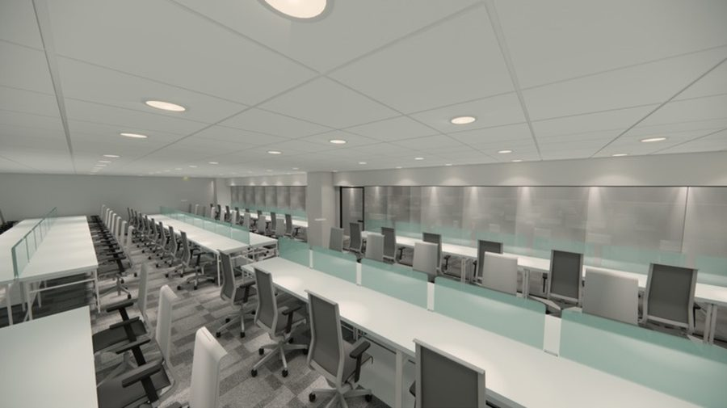

Project · 02 · Workplace
Gamma
A soft reception lounge, glass-fronted meeting rooms, timber-arched booths for focused work and bright open desks.
- Type
- Workplace
- Spaces
- Reception, meeting rooms, cabins, booths, open workspace
- Scope
- Workplace planning, interior design, 3D visuals
- Images
- Design visuals
Space · 01
Reception
A curved desk, a timber slat wall and a deep blue sofa set the tone at the door.
Space · 02
Open workspace
Oak desks in long rows along the windows, broken up by planters so every desk can see green.
Space · 03
Meeting rooms and cabins
Frosted glass fronts keep meetings private. Cabins open to daylight with tan leather chairs.
Space · 04
Booths
Arched timber booths give small groups a quiet place to talk away from the desks.
Space · 05
Washrooms
Stone-look tiles, a floating vanity and warm pendant lights.
All images on this page are design visuals, not photographs of the finished space.
Next project
Alfa
Long, calm rows of desks under an even ceiling, a boardroom for the whole team and quiet cabins finished in oak.
View project →